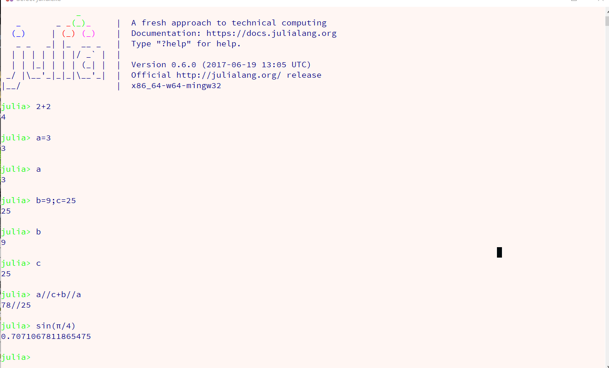
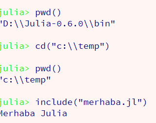

Julia Programlama Dili
Bölüm 1
Başlangıç Bilgileri
Sayfa 2
1.2 - Julia Programlama Platformu
Julia Programlama Platformunun Masaüstü Bilgisayar Sistemine Yerleştirilmesi
Julia programlama ortamının kullanılan masaüstü bilgisayar istemine yerleştirilmesi son derece kolaydır. 64 bit Windows 10 sistemi çalıştıran bir makineye Julia platformunun yerleştirilmeye çalışıldığını varsayalım. Bunun için iki seçenek bulunmaktadır. İlki en basit şekilde, Julia resmî sayfasından 64 bit sürümünün indirilmesi. Bu sürüm, sadece REPL ve notebook ortamlarını sağlar fakat sadece en gerekli paketleri içerdiğinden, iyi çalışan bir ortam sağlar.
İkinci seçenek, daha gelişkin ve sağlık verilen bir yükleme yöntemidir. JuliaPro sayfasından 64 bitlik Windows için, JuliaPro ortamının özgür (free) versiyonu indirilebilir. Bu ortam çok gelişkindir. çok sayıda gerekli paket, Juno yazım ortamı (Atom temelli) , otomatik notebook sistemi yerleştirilmiş olur.
JuliaPro fazla yükü olduğu için bazen düzgün çalışmayabilir. Bu durumda, onu silmeden bırakın. Klasik Julia yükleyin ve ondaki julia.exe programını kullanın. Sorun kalmaz. Yüklenmiş olan paketler de aynen yüklü kalır.
Julia ortamı masaüstü sistemine yüklendikten sonra, yerleştirildiği klasörde, bin klasörü içinde julia.exe dosyasını bulun ve bunu sistem değişkeni (environmental variable) olarak yerleştirin. Makineyi yeniden başlatın.
Yeniden başlayan makinede, Julia programlarını çalıştırmak için üç farklı şansımız bulunmaktadır. Bunlar,
Her üçünün de farklı çalışma ve kod yazım kuralları bulunmaktadır. Daha doğrusu kod yazımı her ortamda aynıdır fakat, her ortamın sağladığı kolaylıklar kod yazımını basitleştirmektedir.
1.3 - REPL
İlk olarak REPL (ReadEvaluatePrintLoop) ortamı tanıtlacaktır. REPL bir komut satırı benzeri ortamdır, fakat komut satırına göre çok gelişkindir.
Julia.exe bir sistem değişkeni olarak tanıtıldıktan sonra, windows komut satırı açılır ve julia yazılıp enter tuşuna basılır. Alternatif olarak, dosya sistemi içinde julia.exe bulunur ve mouse ile üzerine çift tıklanır. Derhal REPL ortamı açılacaktır.
REPL bir hesap makinesi gibi çalışır. Aşağıda bir çalışma örneği görüntülenmektedir:

Yukarıdaki REPL işlemleri incelendiğinde, 2+2 iki tüm Julia ifadelerinin REPL ortamında sorunsuzca çalıştırabildiği ve sonucun görüntelenebildiği anlaşılmaktadır.
İkinci satırda,
julia>a=3 <----Enter
işlemi bir atama işlemidir. Julia programlama dilinde, atama sırasında atanacak değerin veri tipinin belirtilmesi isteğe bağlı ve genellikle sıradışıdır. Atama veri tipi belirtilmeden yapılabilir. Fakat, Julia yorumlayıcısı atanacak veri ile birlikte, çalışılan makinenin işletim sistemini analiz eder, atanacak olan değere en uygun veri tipini bulur, atmayı yapar ve atanan değer için gerçekleşen veri tipini belleğinde saklar. Bundan sonra bu değişkenle yapılacak tüm işlemler için veri tipi uygunluğu aranır. Veri tipine uygun olmayan işlemler tanımlanıp çalıştırılmaya çalışılınca, Julia yorumlayıcısı, bir hata (exception) (kuraldışılık) fırlatır ve eğer bir hata yönetme yöntemi tanımlanmamışsa program, code=1 hata kodu ile durdurulur. Bu işlem yöntemi, Julia programlama dilinin güçlü veri sistemli (Strongly Typed) bir programlama dili olduğunu belirtir. Programcıların, programlama yöntemlerini, kullanacakları nesnelerin bellekteki veri tipleri ile uyumlu olmasını sağlama yükümlülükleri vardır. Yoksa, programları bir adım bile atamaz.
Julia yorumlayıcısın çalıştığı makinenin işletim sistemini ne şekilde algıladığının anlaşılması için sys.WORD_SIZE sorgulaması yapılabilir.
julia>sys.WORD_SIZE
64
REPL ortamında atama sonunda, atama başarılı olmuşsa, atanan değer, yukarıdaki REPL sekansında (birbirini izleyen işlemler) görüntüldüğü gibi bir alt satırda görüntülenmektedir.
Gerçekleşmiş olan en son başarılı işlemin sonucuna, bir sonraki adımda, ans(answer'in kısaltılmışı) öntanımlı sözcüğü ile erişilebilir. Örnek:
julia>3+1<---- Enter
julia>4
julia>
ans+2<---- Enter
julia>6
REPL ortamında, aynı satırda birden fazla işlem, arada noktalı virgül (semikolon) kullanılması ile birbirlerinden ayrılarak tanımlanmaktadır. Satır çalıştırılınca, herşey uygun giderse, tüm ifadeler teker teker çalıştırılır ve gerçekleşen en son işlemin sonucu bir alt satırda görüntülenir.
REPL ortamında bir değerin görüntülenmesi için, print() println() print_with_color() gibi yazdırma algoritmalarının kullanılması gereksizdir. Değerin tanıtıcısını (identifier) diğer bir söylem ile, değişken ismini çağırmak yeterlidir.
Yedinci işlem ilginçtir. Julia programlama dilinde orantılar pay//payda şeklinde tanıtıllır ve işlemler ortaımının tamsayı tipi bozulmadan tamsayı olarak sonuçlandırılır. Sonucun basitleştirme olanağı varsa, basitleştirilir ve sonuç görüntülenir. Burada, 3/25+9/3 =3/25+3=3/25+3*25/25=(3+3*25)/25 =78/25 işlemi yapılmış ve basitleştirme olanağı bulunmadığından, sonuç aynen beliritilmişir.
Son işlem de aynı şekilde ilginçtir. Julia programlama dilinde pi, e gibi semboller öntanımlıdır. Bu semboller, Latex kodlaması ile Grek karakterleri olarak tanımlanabilir. π karakteri \ +pi+TAB klavye sekansı ile oluşturulabilir. Julia programlama dili, matematiğe yatkın olacak şekilde oluşturulmuştur. sin(2*π) yazılması yerine sin(2π) yazılabilir. Bu da Julia programlama diline olağanüstü bir matematik ifade oluşturma olanağı sağlar.
1.4 - Julia Programları (Julia Skriptleri)
Julia programları, uzun ve gerçek programlar olarak da düzenlenebilirler. Bunlara, "Julia Skriptleri" adı da verilir. Julia skriptlerinin gerek yazımları gerekse çalıştırılmaları oldukça sıradışıdır. Julia programları, prensip olarak her türlü tekst programında yazılablirler. Fakat, Julia programlama dilinin özel karakterleri destekleme yeteneğinin değerlendirilebilmesi için, Julia skriptlerinin özel yazılımlarda hazırlanması daha uygun olmaktadır. İlk aday JuliaPro ile birlikte gelen Juno yazılımıdır. Atom yapısına bağlı olan Juno'nun hem yazım hem de çalıştırma yönünde ikili yeteneği bulunmaktadır. Juno, kurulumu ve kullanılması kolay olmayan, stabilitesi zayıf bir programdır. Bunun aslında fazla bir sakıncası yoktur. Yazım (skript), yazım sırasında sürekli kaydedilir. Skript dosyası elde olduktan sonra, Juno'nun çökmesi fazla zarar vermez. Çöken Juno yeniden çalıştırılır. Kaydedilmiş skript yeniden açılır (şansımız varsa !) ve çalışmaya kaldığı yerden devam edilir.
Her ortamda yazılmış olan Julia skriptleri, REPL ortamında örnek olarak, include("junoscript.jl") şeklinde çalıştırılabilir.
Julia skriptlerinin (programlarının) yazımını sağlayabilecek bir başka aday, Visual Studio Code adında Microsoft tarafından yeni geliştirilmiş, kurulumu ve kullanımı kolay, stabilitesi iyi olan, Atom platformu benzeri bir kod editörüdür. VSCode ortamında, her türlü Julia programı çalıştırılabilmekte, fakat grafik görüntüleri desteklememektedir. Bunun da bir sorunu yoktur, çünkü grafik içeren Julia skriptleri, VSCode ortamında yazılıp, REPL ortamında, örnek olarak, include("test.jl") şeklinde çalıştırılabilmektedir.
Julia skriptlerinin yazılması ve çalıştırılması için bir başka aday, "Sublime Text" olarak tanınan bir editörün Julia skriptlerini destekleyen bir sürümüdür. Julia skriptlerini destekleyen Sublime Text yazılımı, stabil, başarılı bir yazılımdır. Bu ortam da aynen VSCode ortamı gibi, Julia skriptlerinin hem yazılabilmesini, hem de çalıştırılabilmesini sağlayabilmektedir. Sadece, bu ortam da, VSCode ortamı gibi, grafik çıktılarını desteklememektedir. Bu da bir sorun oluşturmaz. Yazımı tamamlanan, grafik çıktı içeren Julia programlarının çalıştırılmaları, REPL ortamında gerçekleştirilebilir.
Julia skriptinin yazılımı tamamlandıktan sonra, REPL ortamında çalıştırılabilmesi için, REPL programının skript programını görmesi sağlanmalıdır. Bunun iki yöntemi bulunmaktadır. Ya, REPL ortamının skript dosyasının lokasyonunu görmesi sağlanacaktır. Ya da REPL ve skript aynı klasörde bulunacaktır.
Bir dosyaya herhangibir tekst editörü ile,
println("Merhaba Dünya")
yazalım ve "c.\temp\merhaba.jl" adı ile bir tekst dosyasında saklayalım.
Bundan sonra REPL ortamını açalım ve pwd() yazalım, enter ile çalıştıralım. Burada, pwd saklı sözcüğü, print working directory anlamına gelir ve REPL programının çalıştığı klasörü belirtir. Aslında bundan sonra en kolay yapılacak işlem, bir dosya transferi ile, (Cut/Paste), "Merhaba.jl" dosyasını, REPL klsörüne taşımaktır.
Bir başka seçenek olarak da include("c:\\temp\\merhaba.jl"şeklinde, REPL ortamına script programının lokasyonunu bildirmektir.REPL, JSON temellidir. JSON notasyonunda, klasör ayraçları \ (slaş) nın ek bir \ (slaş) ile saklanması, (escape) edilmesi gereklidir.
Üçüncü olasılık REPL programının çalışma alanını, "Merhaba.jl"skript dosyasının bulunduğu, "c:\temp" klasörüne taşımaktır. Bunun için REPL program satırına, cd("c:\\temp")yazmak yeterlidir. Bundan sonra, REPL ve skript dosyası aynı klasörde olacakları için, include("merhaba.jl") bildirimi ile, "merhaba.jl"skript dosyası çalıştırılabilecektir. p>
Bir örnek olarak,

Doğal olarak, grafik içermeyen bir Julia skripti olan "merhaba.jl"'in, REPL kullanılmadan doğrudan "Sublime text" veya "VScode"veya en kötü olasılıkla "Juno" üzerinde çalıştırmaktır.
1.5 - Notebook Ortamı
Julia notebook ortamı aslında IPython notebooklarının, Julia kernel (çekirdek) üzerinden çalıştırılmasıdır. Julia notebooları, aynı IPython notebookları gibi *.ipynb (IPython notebooks) son ekine (extension) sahiptir.
İlginç bir Julia notebook ortamı, web üzerinde on-line çalışan "Julia Box"sitesidir. Çok stabil olmayan bu siteye, https://www.juliabox.com üzerinden ulaşılabilir. Kayıt olduktan sonra, açılan notebook ortamında, kendi makinemize hiç Julia implemantasyonu (yerleşimi) yapmadan, Julia program kodlarını çalıştırabiliriz.
Julia notebooklarına kendi makinenizde erişim sağlayabilmek için, eğer JuliaPro üzerinden yerleşim yapıldı ise, masaüstünde IJulia Notebooks ikonuna tıklamak yeterlidir. Eğer doğrudan Julia sitesinden indirilmiş ise, ilk çalıştırma için REPL üzerinden,
julia>Pkg.add("IJulia")
yazılarak, IJulia paketi, Julia ortamına eklenir. Bu işlem sadece bir kez gereklidir. Bundan sık sık yapılması gereken ortam güncelleme işlemi,
julia>Pkg.update()
yazılıp, Enter tuşuna basılarak gerçekleştirilir.
Sistem güncellenmesi tamamlanınca, artık bundan sonra REPL komut satırına sadece,
julia>using IJulia <---- Enter
julia>notebook() <---- Enter
yazılması ile, Julia notebook ortamı açılacaktır.
Ipython notebook ortamında Julia skriptleriin çalıştırırılması için, ya önceden saklanmış bir *.ipynb programı yeniden açılacak veya yeni bir Julia notebook sayfası açılacaktır.
Yeni bir IJulia notebook sayfası açılması için, file sekmesinden new seçeneği tıklanır, açılan "untitled.ipynb" dosyasına kernel seçimi için, bir Julia kerneli seçilir. Yine file sekmesinden rename seçeneği ile bu yeni IJulia notebook sayfasına yeni bir isim verilir. Sonuçta <yeniİsim>.ipynb adlı Julia notebook sayfası kullanıma hazırdır.
IJulia notebook sayfaları hücre (cell) temeline göre çalışır. Her hücre bağımsız bir çalıştırma (değerlendirme) (evaluation) ortamı olmasına karşın, bir hücrede belleğe alınan bir veya birçok değer, fonksiyon makro ve benzeri, daha sonraki hücrelerde çağrılabilir.
IJulia notebooklarında (çalışma defterlerinde) iki türlü hücre vardır. Bunlar,
tipi hücrelerdir.
Markdown hücreleri yorum yapmak için kullanılır. Burada açıklamalar yapılabilir. Markdown hücreleri, HTML kodlarını değerlendirebilir. Aşağıdaki yazım, hücre ortasında görüntülenen, kırmızı bir yorum satırı oluşturur.
<p style="color:red;font-famlily:Verdana Geneva sans-script;font-size:16;text-align:center;">Paragraf Başlığı</p>
Notebook kod hücrelerinin yazılımı, REPL satırlarına çok benzer. Her hücrede birden çok işlem, semikolon ile ayrılarak tanımlanabilir. En son tanımlanan işlemin sonucu, görüntülenir. Her hücre, CTRL+Enter tuş kombinasyonu ile çalıştırılabilir.
Notebook hücrelerinde println() tipi yazdırmaya pek gerek olmaz, zira değişkenin adı yazıldığında değeri görüntülenir. Ama, istenirse, tüm bir Julia skriptinin içeriği, bir notebook hücresinde çalıştırılır. Bu nedenle, Julia programlanmasında, skript yazılımına fazla gerek olmamaktadır.
IJulia ve Ipython notebookları, Python alt yapısının dayanaksız olması ve sık sık çökmesi nedeni ile fazla stabil değillerdir ve Python alt yapısı beklenmedeik bir anda çökerek, save edilmemiş notebook'u ortada bırakır. Notebook yazılımı tekst temeline dayanmaz ve kopyalanması pek olası değildir. Bu nedenle çökme, bir emeğin kaybolmasına neden olabilir. Daha kötüsü, bu yazılımların hatırlanmaları sağlanamazsa, yeniden yazımları çok sıkıntılı olabilir. Bu nedenle, alt yapıları çöken notebooklar asla kapatılmamalıdır.
Bu sorunun ilginç bir atlatılma yolu vardır. Window alt yapısı, her iki Julia alt yapısının implemantasyonuna olanak verir. Fakat sadece birindeki julia.exe sistem değişkeni (environmental variable) olanak tanımlanabilir. Bizim sağlık vereceğimiz yöntem, Hem JuliaPro hem de Julia alt yapısının farklı yerlere kurulması, ve JuliaPro ile gelen julia.exe programının sistem değişkeni olarak tanımlanmasıdır. Böylece REPL ve notebook ortamı, JuliaPro üzerinden çalıştırılacaktır. Julia alt yapısı ile gelen julia.exe masaüstüne bir kısayolu yerleştirilerek yedekte kalacaktır. Python alt yapısı çöküp, notebook yazılımı ortada kalınca, yedek julia.exe çalıştırılıp önce REPL sonra da notebook ortamı açılır. Henüz açık olan eski çakılmış notebooktaki kritik kodlar yeni açılan ve çalışan notebook hücrelerine kopyalanır. Çakılmış notebook kapatılır ve aynı alt yapı ile yeniden açılır. Henüz açık olan yedek yapı notebook'a aktarılmış olan kritik kodlar, yeniden açılmış olan ait olduğu notebook ortamına kopyalanır. Bu şekilde bilgi kaybı önlenmiş olur. Yedek notebook sayfası kapatılır. Yedek alt yapı, yeni bir çökme olasılığına karşı hazır olarak bekler.
Bilgisayar dünyasında, her şey sanki bir sorun olmayacakmış gibi sunulur. Oysa, her zaman sorun çıkar ve çıkan sorunları aşma yöntemleri araştırılır. Bilgisayar uzmanlığı sadece, katalog kitabındaki bilgileri uygulamaktan oluşmaz. Bu gibi pratik konuların üstesinden gelebilmek de bilgisayar bilimlerinin bir parçasıdır ve bu konuda uzman olmak isteyenlerin emek vermesi gereken bir konudur.
Yazdığımız tüm Julia programlarını çalıştıracak olanaklar elimize geçmiş olduğundan, artık Julia programlarının yazımına başlayabiliriz.
Created With Microsoft Expression Web 4